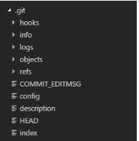
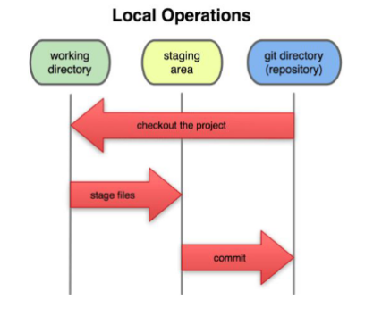
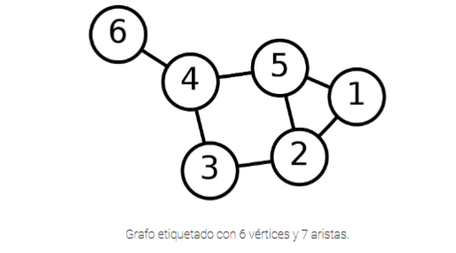
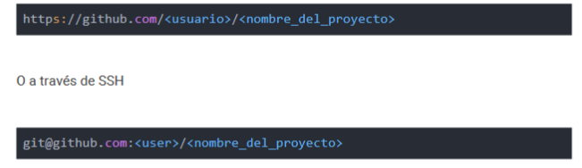

Repositorio
dentro de la carpeta del proyecto se debe alojar otra carpeta .git, de esta manera se sabe que es un repositorio de git, esta carpeta .git se aloja dentro del proyecto porque es desde allí donde guarda todo el historial de movimientos que hagamos dentro del proyecto, si se elimina esta carpeta se elimina todo el historial del proyecto.
Un directorio .git tiene una estructura similar a la siguiente:
- 
-
objects/
- En este directorio se almacenan los datos de sus objetos GIT: todo el contenido de losarchivos que haya registrado, sus commits, branches y tags./[0-9a-f][0-9a-f] Un objeto recién creado se almacena en su propio archivo. Los objetos se colocan en subdirectorios 256 utilizando los dos primeros caracteres del nombre de objeto SHA1 para mantener el número de entradas de directorio en los objetos en un número manejable. Los objetos que se encuentran aquí a menudo se denominan objetos desempaquetados o sueltos. objects/packLos los archivos que almacenan muchos objetos en forma comprimida, junto con los archivos de índice para permitir el acceso aleatorio, se encuentran en este directorio. objects/info La información adicional sobre el objeto almacenado se coloca en este directorio.
-
refs
- Las referencias se almacenan en los subdirectorios de este directorio. El comando git prunesabe que debe preservar los objetos accesibles a partir de las referencias que se encuentranen este directorio y sus subdirectorios refs/heads/ contiene objetos de commit refs/tags contiene cualquier nombre de objeto refs/remotes contiene los objetos de confirmación de las ramas copiadas desde un repositorio remoto
-
Archivo HEAD
- Este archivo contiene una referencia al branch en la que se encuentra actualmente. Esto ledice a GIT qué usar como padre de su próximo commit
-
archivo de configuración config
- Este es el archivo de configuración principal de GIT. Mantiene opciones específicas de GITpara su proyecto, como sus controles remotos, configuraciones de inserción, branches deseguimiento y más. Su configuración se cargará primero desde este archivo, luego desde unarchivo ~ / .gitconfig y luego desde un archivo / etc / gitconfig, si existe.
-
hooks/
- Este directorio contiene scripts de shell que se invocan después de los comandos GITcorrespondientes. Por ejemplo, después de ejecutar un commit, GIT intentará ejecutar elscript posterior a la confirmación.
-
archivo de índice index
- El index GIT se utiliza como Stage Area entre su Working Directory y su repositorio. Puede utilizar el index para crear un conjunto de cambios que desea confirmar juntos. Cuando crea un commit, lo que se confirma es lo que está actualmente en el index, no lo que está en sudirectorio de trabajo. Es un archivo binario que contiene una lista ordenada de nombres de ruta, cada uno con permisos y el SHA-1 de un objeto blob
-
info/
- registra la info adicional sobre el repo.
-
logs/
- Almacena los cambios realizados en las referencias en el repositorio. logs/refs/heads/ Registra todos los cambios realizados en las diferentes puntas de rama. logs/refs/tags/ Registra todos los cambios realizados en las diferentes etiquetas.
-
modules
- contiene los repos git de los submodulos
tipos de repositorios
- locales
- como su nombre lo dice es un repositorio en el disco local, osea, un proyecto alojado en mi computadora
- centralizados
- era trabajo colaborativo donde el proyecto se guardaba en el servidor, entonces lo malo era que si se caia la conexion de alguien, esa persona no podia continuar su trabajo porque todo se hacia con conexion
- distribuidos
- se le permite a cada desarrollador descargar una copia local de todo el proyecto,(branch) osea se clona el proyecto asi no hay problema con la conexion, esta es la manera actual y la mas efectiva
estados de un repositorio
los principales estados de un archivo en git son...
- commited
-
es cuando los datos se almacenan en la base de datos local de manera segura.
en otras palabras es cuando guardo el archivo a la base de datos de git.. hago un snapshot del archivo justo como esta guardado en el momento de la comiteada.
si despues de la comiteada modifico ese mismo archivo, agregando o quitando algo de alli entonces esta listo para ser comiteado de nuevo.
comando: git commit -m 'nombre del commit'
git commit --amend sirve para modificar el log de un commit, para corregir el nombre de un commit. agarra el ultimo commit hecho y permite settearlo
-
es cuando los datos se almacenan en la base de datos local de manera segura.
en otras palabras es cuando guardo el archivo a la base de datos de git.. hago un snapshot del archivo justo como esta guardado en el momento de la comiteada.
si despues de la comiteada modifico ese mismo archivo, agregando o quitando algo de alli entonces esta listo para ser comiteado de nuevo.
comando: git commit -m 'nombre del commit'
- modified
- es cuando el archivo ha sido modificado pero no ha sido confirmado en la base de datos(no se ha actualizado).
- staged
- es cuando el archivo modificado esta listo para ser pusheado, osea que esta en el 'camerino' listo para ser enviado o guardado. en el bash el nombre del archivo cambia a color verde. el comando para mandar a stage es git add nombre del archivo
-
si quiero agregar una carpeta nueva con todo su contenido al stage le doy git add nombre de la carpeta.
si quiero pasar el stage a un archivo de la carpeta especificada lo hago con lo siguiente git add nombre de la carpeta/nombre del archivo
git add -i es un comando que muestra con mas detalle los cambios que podemos realizar en el repo
Estos anteriores estados pertenecen a las principales secciones de un proyecto git. el comando para ver los estados en el bash es git status
- el directorio .git
- working directory
- stage area

en resumen, el primer paso es estar trabajando en el proyecto local, luego con git add mando el archivo al stage area y por ultimo lo guardo en el repositorio de git al darle git commit y haciendo git pull lo mando al repo remoto de github.
Grafos
Un grafo es un conjunto de objetos llamados vertices o nodos que estan unidos por enlances llamados aristas y representan relaciones binarias entre elementos de un conjunto.
por ejemplo una red de computadoras puede ser un grafo en donde los nodos son las pc y los aristas son las conexiones o relaciones que tienen con los otros.

comandos para la configuracion inicial
- cambiar el nombre de usuario
- git config --global user.name 'nombre de usuario'.
- settear el email del usuario
- git config --global user.email 'email del usuario'
- settear la preferencia del editor de codigo
- git config --core.editor 'path del editor de codigo'
para listar los cambios hechos el comando es git config --list /git config --list --show-origin.
registro de cambios
- git log
- muestra los commits hechos, la fecha y quien los hizo, del ultimo al primero los lista
este comando viene con muchos atajos y parámetros que podemos agregar para que lasalida en la línea de comandos no sea tan abundante. Particularmente las opciones de--oneline y --graph son sumamente útiles para mostrar información abreviada sobre cadacommit y para poder ver un gráfico ASCII mostrándonos nuestro historial de commits.
repositorios remotos
son repositorios guardados en los clientes de git y permiten el desarrollo colaborativo.
lo siguiente es para configurar un remoto.
Ahora que nuestro proyecto está almacenado en GitHub, podemos darle la URL a cualquierpersona con la que queramos compartir nuestro trabajo. Cada proyecto en GitHub esaccesible a través de HTTPS como

- git remote add alias del proyecto https://github.com/usuario/nombre_del_proyecto
- git remote -v, muestra el listado de proyectos remotos que tengamos en nuestro repo
- git push remote branch permite hacer un push al proyecto, si nadie mas ha hecho uno, usar solo cuando es un proyecto en el que trabajas solo y por lo tanto tienes todos los permisos